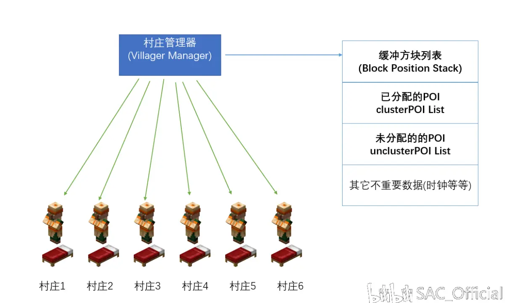
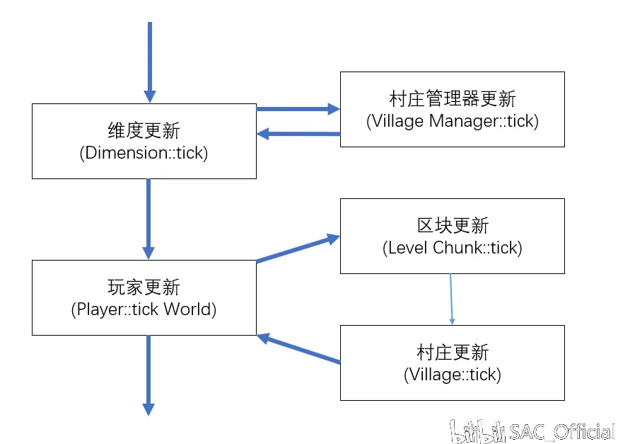
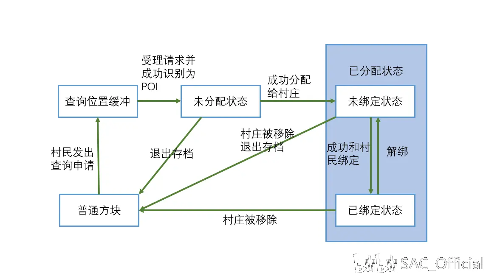

这篇专栏会较为详细地阐述MCBE中村庄的产生与消亡，村庄范围与中心的变迁，POI的生命周期等过程。
POI
POI就是(point of interst),也就是村民的兴趣点，POI一共有四类(其实是三类)
一个POI里面存的信息包括但不限于:
村庄管理器
MCBE中单维度的所有村庄都是由一个叫做村庄管理器的东西来管理的。这个管理器管理着村庄的运行，管理POI的状态，村庄状态的更新，铁傀儡的刷新，劫掠的产生等等等。一个维度有且仅有一个村庄管理器
村庄管理器做的最基本的事情是在你打开(关闭)存档的时候把存档内部的村庄信息加载进游戏(把游戏中的村庄信息写入存档)。
下面是村庄管理器所包含的数据：

村庄管理器的结构
村庄
你在游戏中看到的村庄是一些村民和一些方块的集合，但是游戏内部的的村庄其实也是一坨数据的集合，这些数据包括但不限于:
居民系统(Dweller System)
居民系统定义了村民的作息和行为，这使得不同状态的村民在不同的时间内做不同的事情
对于居民系统，我们仅需要知道，村民会在特定时候寻找以它为中心32*8*32的POI。
村庄管理器的数据更新
每个游戏刻(gt)村庄管理器都和区块，和方块实体一样在更新(说白了就是执行tick()函数),比较特殊的一点是,村庄管理器不光要更新自己，还要更新维度内的每一个村庄(执行每一个村庄的tick()函数),下面是村庄相关更新和区块更新之间的一个层级关系:

更新层次
这里区块更新不是重点，不赘述，但是可以看到村庄管理器的更新是不依托于区块加载的。
那么村庄管理器的更新到底做了什么？
每个游戏刻村庄管理器都试图进行如下操作:
1. 尝试移除村庄
下面是操作的步骤
2.受理村民的POI查询请求
上文提到村民会在特定时候寻找以它为中心32*8*32的POI，但是村民的工作仅仅是向村庄管理器提出查询请求，查询请求里面装的是村民的坐标，这些坐标会被暂存到村庄管理器的方块位置的列表(Blcok Position List)中。
而受理村民的POI查询请求要做的就是帮助村民查询:
需要注意的是，每个游戏刻村庄管理器只受理一个请求(即查询一次)，如果这个区域的合适的方块超过1024个会直接停止查询。
这一步就是创建POI的过程，但是这个过程结束的时候新创建的POI还不属于任何村庄，于是下面要做的就是把未分配的POI分配给各个村庄
3. 尝试分配POI
创建的POI一直放着也不是办法，总要分发给村庄，这一步执行的就是这个过程：
注意这个64格是和村庄的最近距离，不是中心(这里存疑，如果有玩家能给出准确数据感激不尽)
在略去流浪商人的更新问题后当前游戏刻村庄管理器的事情终于做完了，下面是村庄的行为。
村庄更新
村庄更新是由村庄管理器调用的，每个游戏刻村庄管理器会遍历当前维度的每一个村庄并依次执行它们的tick函数
这里为了阅读方便再写一遍村庄的数据:
下面是tick函数的过程(不包括劫掠相关)
1. 更新村民的时间戳
村庄所属的每个实体都有一个时间戳(应该是方便村民行为的，如繁殖,活动等等)，这个行为就是同步村庄里面所有村民的时间戳，把出问题的村民直接移出村庄(暂不清晰)
2. 更新已经绑定的POI状态
这一步主要是对已经绑定的POI进行检查:具体操作是遍历每个村民绑定的每个POI(也就是遍历绑定的POI列表)，对于出现状况的POI会将该POI和村民解绑，并且把该从村庄管理器的已分配列表中移除，可能的条件:
如果在上述操作中绑定关系被修改(有POI被移除),就会进行所谓的重新计算POI距离(calPOIdist)的操作,这个操作也是你无法确定村庄中心的罪魁祸首.
下面就是calPOIdist操作
这操作看着没啥毛病，但是最要命的是已绑定的POI列表是一个哈希表,村民在这个表里面的排列顺序和村民自身的唯一实体ID完全相关，和村民的加入顺序的关系并不紧密，由于你无法通过常规手段获取这个ID，因此你无法找到上述操作遍历到的第一个村民,同时无法确定最基础的村庄中心，更何况调整以后的。
3.铁傀儡刷新
当如下条件同时满的时候会尝试进行铁傀儡刷新
如果上述条件成立，会在村庄中心前后左右各8格,上下3格的区域内进行10次随机选点，如果每次的选点都能够刷出而且都在村庄范围内，会进行铁傀儡的生成。
上面是每个游戏刻村庄更新做的事情(劫掠除外)，当游戏刻是30的倍数的时候(也就是正常情况下的每1.5s)村庄更新还会做如下的事情:
4. 处理未绑定的POI
前排提醒：未绑定的POI是村庄管理器塞给村庄的
注意:退出游戏的时候会存入存档的只有已经绑定的POI列表，未绑定的POI列表在下次进入游戏就没了
最后附上一张POI的生命周期:

一个POI的生命周期
顺带一提，头图是一个当MCBE中所有随机数都返回1时生成的世界
文: _hhhxiao